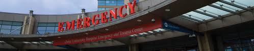

<!DOCTYPE html>
<html lang="en">
<head>
    <meta charset="UTF-8">
    <meta http-equiv="X-UA-Compatible" content="IE=edge">
    <meta name="viewport" content="width=device-width, initial-scale=1.0">
    <title>Emergency</title>
    <link href="C:\Users\129TX\Desktop\python\hms\css\emergency.css" rel="stylesheet" type="text/css">
</head>
<body>
    <style>
    html{
        
        background:url('back.jpg') no-repeat center center fixed;
        background-size: cover;
        -webkit-background-size:cover;
        -moz-background-size:cover;
        -o-background-size:cover;
    }
</style>
</body>
</html>
<section class="paras">
    <div class="emergencyimage">
        

    </div>
    <div class="emergency">
        <h1>emergency </h1>
        <ul>
           <li><p> the emergency department assesses and treats people with serious and those in need of emergency treatments. its open 2 hours a day,365 days of the year.</p></li>
           <li><p>the emergency department is sometimes refferd asa casualty.accident and emergency ar aA&E,if an ambulance is needed you can call 999,the emergency phone number in England</p></li>
            <li><p>generlly you should go to the emergency department only in emergencies such as loss of conciousness,a very serious state of confusion,persistent serve chest pain or breathing difficulties.</p></li>
            <li><p>emergency ambulance,fire engines and police vehicles are now the onlu vehicles permitted to use the access road into th eemergency department which is situated opposite the eye unit.</p></li>
            <li><p>all the other cehicles that require access to the emergency department,including cars,taxies and patients transports,are to use the drop-off boys outside of the north wing enterence of th hospital.this should be accesses via main site entrance from Tremona road. </p></li>
  </ul>
    </div>
    
</section>